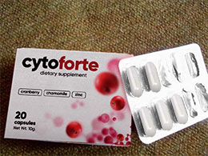

SOS! Labai reikia jūsų pagalbos. Vieną dieną vaikščiojau su mažuoju sūneliu, lauke jis miega kaip angelas. Panašu, kad peršalau. Dėl to man atsirado cistitas. Kenčiu tris dienas, yra aštrus skausmas ir kas 5 minutes vaikštau į tualetą. Aš labai išsekusi. Kas esat susidūrę, papasakokit, ką darėt, kaip išsigydėt. Tikiuosi galėsit man padėti!

Aš labai gerai suprantu jūsų problemą! Turėjau cistitą, kuris nėštumo metu atsirado dėl silpnos imuninės sistemos. Prasidėdavo, kai tik ateidavo žiema. Aš bandžiau gydytis visokiomis priemonėmis, tačiau tabletės davė tik laikiną poveikį ir išgėriau jų tiek, kad pradėjau jausti skrandžio skausmus. Aš perėjau prie natūralių metodų. Iš visų priemonių kurias išbandžiau be konkurencijos geriausias buvo .
Tai nėra kažkokios dvokiančios žolelės, kurių neįmanoma gerti. Sudėtyje yra visų rūšių vitaminų, cinko, ramunėlių ir spanguolių ekstraktų. Perskaičiau, kad šie komponentai labai gerai malšina uždegimą ir skausmą.
Taigi, vartojau 10 dienų du kartus per dieną. Simptomai praėjo antrą diena, po to pranyko ir uždegimas. Po savaitės pamiršau, kas yra cistitas. Suvartojau visą kursą, kad įsitikinčiau, kad viskas gerai. Jau praėjo dveji metai, kai paskutinį kartą sirgau šia bjauria liga! Skaitykite daugiau čia apie , kaip jis veikia ir t.t. Sėkmės!

Mano mama pataisė kažkokio žolelių gėrimo. Bet man atrodo kad nuo jų kyla alergija, per daug išgėrus pradėjo niežėti.

Oj aš irgi kenčiu nuo šitos ligos! Susirgau dėl cistito. Kartais dar pakenčiama, bet kartais sunku ištverti!

Aš išsigydziau cistitą su , gydytojas rekomendavo. Merginos, nenoriu prisikalbeti, bet nesergu jau daugiau nei 6 menėsiai.


Būtinai laikykite šiltai kojas. Taip pat turėtumėte reguliariai tikrintis, ar nėra infekcijos. Aš naudoju natūralias priemones, chemikalai kenkia kūnui.

Daugelis žmonių nesupranta, kas yra cistitas, ir tiesiog numalšina skausmą ir nemalonius pojūčius tabletėmis. Tai veda prie besitęsiančio uždegiminio proceso, kuris gali tapti lėtinis (kaip nutiko mano draugei). Taigi merginos, neapleiskite šios ligos!

Aš sergu lėtiniu cistitu, bijau kad išgydyti jau per vėlu. Aš negydziau jo ir nieko nedariau, o turėjau veikti. Dabar stengiuosi pasirūpinti savimi, niekada neleidžiu sau sušalti ir t.t.

Kalbate niekus. dabar galite išgydyti ir be antibiotikų. Mano mama sirgo daugiau nei 10 metų, gydytojai nežinojo ką daryti. Užsakiau jai internetu. Iš pradžių ji priešinosi, sakė netikinti, kad tai gali padėti. Bet padėjo! Ji laiminga daugiau nei 3 metus. Neseniai ji buvo pas ginekologę, tyrimų rezultatai dabar yra daug geresni, nebera kenksmingų bakterijų. Visoms be išimties moterims patarčiau vartoti šį produktą kaip prevencijos priemonę.

Merginos, aš buvau 3 vaistinėse, ten neparduoda jokio cyto forte . Kur nusipirkti?

Kiek žinau parduoda internete oficialiame puslapyje. Aš ten užsisakiau, atsiuntė gan greitai per 2-3 dienas. Vaistinėse rasi tik klastotes. Uzsisakyk tiesiai iš gamintojo.

Aš ją išsigydziai su kapsulėmis, pavadinimo dabar nepamenu. jos labai gerai padeda, tačiau jūs turite atkurti mikroflorą. nes šios kapsulės yra labai stiprios.
Kai tik išsiskyriau su vyru, cistitas dingo! Taip ir žinojau kad jis kaltas.
Turėjau ir aš cistitą. Gydytojas man rekomendavo: jei norit palengvinti skausmą ūminiu laikotarpiu, galite naudoti šildymo pagalveles (laikyti tarp kojų), tačiau tai įmanoma tik tuo atveju, jei nėra kraujavimo. Taip pat vartokite daugiau vandens (dažniau šlapinsitės), venkite aštraus maisto ir kavos. Paūmėjimo laikotarpiu turėtų būti lytinė abstinencija (tai sunkiausia dalis man ir mano vyrui). Simptomai praeina lėtai, bet užtikrintai. Nežinau, ar ilgam. Praėjo mėnuo, kol kas viskas gerai

Ačiū dievui, aš niekada to neturėjau ir tikiuosi, kad niekada neturėsiu. Visada dėviu šiltus drabužius, tris žiemines kojines, dvi kelnes ir t.t Kenčia tos, kurios žiemos metu dėvi nailonus.

Manau, kad net nenumanote, kas iš tikrųjų yra cistitas! Nes jūs rašote nesąmones. Tai gali sukelti nesubalansuota mityba arba konkreti jūsų vidinių organų vieta. Nailonai neturi nieko bendra su tuo. O gal manote, kad mes visos neadekvačios ir žiemą vaikštome nuogos?

Visi gydytojai rekomenduoja antibiotikus, jie nieko daugiau negali pasiūlyti. Tai nepašalina problemos. Po savaitės ar dviejų viskas prasideda iš naujo. Mano drauge išgėrė tris antibiotikų kursus. Bet tik kai nustoja juos vartoti, liga vėl pasireiškia. Ji eina pas gydytoją, jis skiria ką nors dar stipresnio ir istorija kartojasi. Žodžiu galiausiai ji paklausė manęs ir užsisakė . Po trijų dienų ligos kaip nebūta. Ji jau pirmą dieną pajautė palengvėjimą. Taigi, nereikia savęs nuodyti! Gaila, kad žmonės laiku to nesupranta. Gaila.


Turiu tokią pačią problemą... Pastebėjau, kad paūmėja kita dieną po sekso ar alkoholio vartojimo (netgi po mažo kiekio)

Reikėtų gerti daug skysčių. Gerkite spanguolių sulčių ir valgykite daug jogurto. Taip pat darykitės karštas vonias su soda, pasigaminkite ramunėlių arbatos ir gerkite ją 4 kartus per dieną. Apie visus baisius pojūčius pamiršite po dienos ar dviejų.
Kodėl vartoti kažką su laikinu poveikiu, kai ligą galima išgydyti visam laikui? Ar žinot, kodėl spanguolių sultys laikomos sveikomis? Jose yra amino rūgščių, kurios naikina cistitą sukeliančias bakterijas. Štai kodėl spanguolių sulčių ekstraktas yra pagrindinis komponentas. Cinkas sustiprina jo poveikį ir gerina imuninę sistemą, taip neleidžiant ligai atsikartoti. Taigi, negaiškite laiko ir pradėkite naudoti priemonę, kuri veikia.
